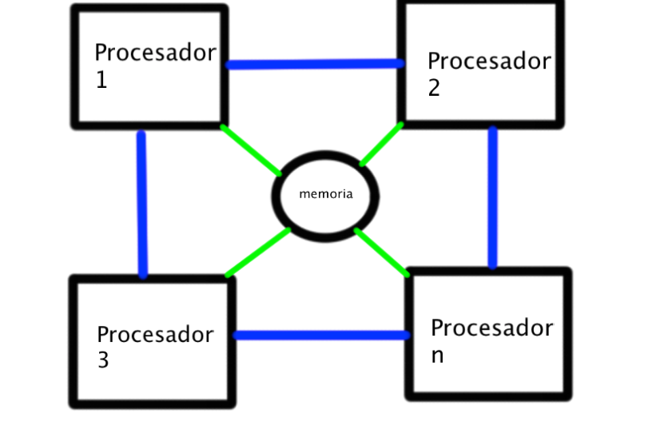

1.1 Modelos de arquitecturas de cómputo
1.1.1 Clásicas
Las arquitecturas clásicas son el punto de partida en el estudio de sistemas de cómputo. Dos de las más influyentes son la arquitectura de Von Neumann y la arquitectura Harvard.
- Von Neumann: En este modelo, la memoria es compartida para instrucciones y datos, lo que simplifica el diseño. Sin embargo, presenta un cuello de botella al no poder acceder simultáneamente a ambos.
- Harvard: Separa físicamente la memoria de datos y de instrucciones, permitiendo el acceso paralelo, lo que mejora el rendimiento en sistemas embebidos o DSP.
1.1.2 Segmentadas
La arquitectura segmentada o "pipeline" divide el procesamiento de instrucciones en etapas (como búsqueda, decodificación, ejecución, etc.). Esto permite que varias instrucciones se procesen simultáneamente, mejorando la eficiencia del sistema.
Por ejemplo, mientras una instrucción está siendo ejecutada, otra puede estar siendo decodificada y una tercera buscada. Este diseño es común en procesadores modernos.

1.1.3 De multiprocesamiento
Los sistemas de multiprocesamiento utilizan múltiples unidades de procesamiento para realizar tareas simultáneamente. Pueden ser:
- SMP (Simétrico): Todos los procesadores tienen acceso equitativo a la memoria y al sistema operativo.
- AMP (Asimétrico): Cada procesador puede tener una función específica o ejecutar distintos sistemas.
Este tipo de arquitectura es clave en servidores, supercomputadoras y sistemas de alto rendimiento, permitiendo ejecutar procesos en paralelo con mayor velocidad.
